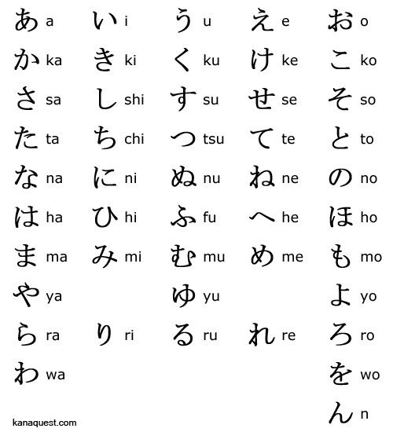
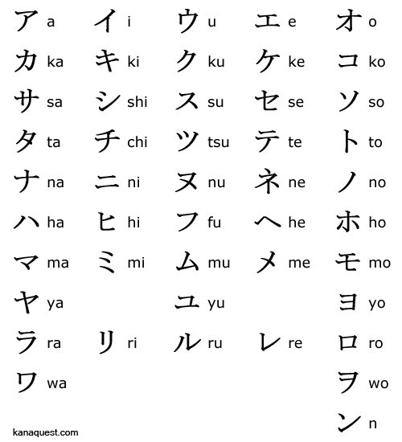
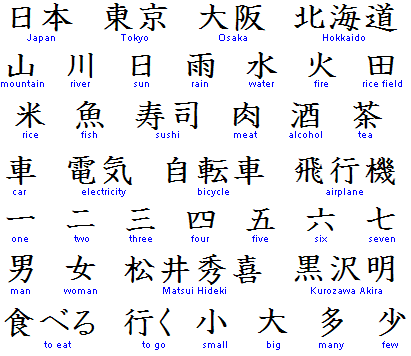

Alfabet hiragana
kursywny (zaokrąglony) system pisma sylabicznego, służący m.in. do zapisu: odmiennych końcówek gramatycznych, partykuł, przedrostków i przyrostków, japońskich słów, które nie mają z różnych powodów zapisu kanji. Hiragana jest również używana w postaci pomniejszonej jako furigana zapisywana powyżej (w piśmie poziomym) lub obok, po prawej stronie (w piśmie pionowym) kanji, aby wskazać ich właściwą wymowę
Alfabet katakana
służy do zapisywania: nazw własnych, nazwisk i imion pochodzenia obcego, słownictwa zapożyczonego z języków zachodnich, wyrazów dźwiękonaśladowczych, nazw naukowych, podkreśleń, nacisków (podobnie jak w przypadku polskiej kursywy lub wytłuszczenia).
Przykładowe kanji
Kanji służą do zapisu rdzeni japońskiego słownictwa. Obejmują: słowa, zwłaszcza rzeczowniki, pochodzenia chińskiego i słowa ułożone w Japonii na wzór chiński, a także japońskie słowa rodzime.
Info! Dla rozpoznania poszczególnych alfabetów możemy rozróżnić je wiedząc że Hiragana ma znaki zaokrąglone, Katakana ostre natomiast Kanji oznacza się skomplikowaniem zapisu
NAUKA JĘZYKA JAPOŃSKIEGO. OD CZEGO ZACZĄĆ?
Język japoński, choć zaliczany jest do grupy najtrudniejszych języków świata, ma swoich zwolenników na całym świecie. Wielu pasjonatów języka japońskiego rozpoczyna jego naukę na własną rękę, by następnie kontynuować ją u boku doświadczonych nauczycieli.
Nauka języka japońskiego
Nauka języka japońskiego z całą pewnością sprawi wiele radości i przyjemności osobom, których pasjonuje japońska kultura. Fani Japonii starają uczyć się języka ze wszelkich możliwych źródeł. Oczywiście język ten nie należy do najprostszych, wobec czego nie należy spodziewać się, że uda nam się okiełznać wszystkie znaki języka Kraju Kwitnącej Wiśni w ciągu jednego semestru czy jednego roku. Nauka języka japońskiego, podobnie z resztą jak i innych języków, wymaga od ucznia wielu poświęceń. Rozpoczęcie nauki powinno zaczynać się od znaków z grupy hiragana oraz katakana. Ich opanowanie umożliwi posługiwanie się językiem na poziomie podstawowym.
Język japoński od podstaw
Jak zacząć naukę języka japońskiego? Najlepiej zacząć od poznawania hiragany i katakany, a więc logografów japońskich, systemów pisma sylabicznego kana. Drugim z nich jest katakana. Każdemu znakowi hiragany odpowiada znak katakany. Wszystkich znaków japońskich jest ponad 60 tysięcy, jednak do swobodnego porozumiewania się językiem wystarczy znajomość około 2 tysięcy kanji oraz hiragany i katakany. Znaków uczyć można się ze stron fanowskich, które znaleźć można w Internecie i które pozwalają na obeznanie się z podstawowymi znakami i zwrotami. Kolejne kroki wykonać możemy, korzystając z samouczków, jakie znaleźć można w serwisie YouTube. Dalsze kroki to zakup podręczników i ćwiczeń, a także zapisanie się na kurs języka japońskiego w wybranych szkołach językowych, bądź skorzystanie z pomocy native speakera podczas prywatnych lekcji.

Uwaga! Na początku bardzo łatwo się zniechęcić do języka, jest on bardzo trudny a ilość znaków Kanji wydaje się być przytłaczająca (aż 60 tysięcy znaków!) Jednakże nie jest potrzebna znajomość wszystkich tych znaków, przy ilośći 2 tysięcy jesteśmy w stanie komunikować się z rdzennymi mieszkańcami, to kwestia czasu i ćwiczeń
Wymowa słownictwa
Kocham cię -
Aishiteru - 愛してる（あいしてる）
Witam; dzień dobry -
kon'nichiwa - 今日は (こんにちは)
Wróciłem/am -
Tadaima - ただいま
Dziękuję -
Arigatō - ありがとう
Ważne! Bardzo ważne jest poprawne akcentowanie spółgłosek w innym przypadku możemy wypowiedzieć inne słowo a przy tym spotkać się z niezrozumieniem od strony naszego słuchacza